Sử dụng font
Godot cho phép bạn đặt font cụ thể cho các node UI khác nhau.
Có ba nơi khác nhau để bạn thiết lập việc sử dụng font. Nơi thứ nhất là theme editor. Chọn node bạn muốn đặt font và chọn tab font. Nơi thứ hai là trong inspector của control node, dưới Theme Overrides > Fonts. Cuối cùng, trong cài đặt inspector của theme, dưới Default Font.
Nếu không chỉ định font override ở đâu cả, Open Sans SemiBold sẽ được dùng làm font mặc định của dự án.
Ghi chú
Kể từ Godot 4.0, kích thước font không còn được định nghĩa trong chính font mà thay vào đó được định nghĩa trong node sử dụng font. Việc này được thực hiện trong mục Theme Overrides > Font Sizes của inspector.
Điều này cho phép thay đổi kích thước font mà không cần nhân bản font resource cho mỗi kích thước font khác nhau.
Có 2 loại file font: dynamic (định dạng TTF/OTF/WOFF/WOFF2) và bitmap (định dạng BMFont .fnt hoặc ảnh monospace). Font dynamic là lựa chọn phổ biến nhất, vì chúng có thể thay đổi kích thước mà vẫn sắc nét ở kích thước lớn. Nhờ bản chất dựa trên vector, chúng cũng có thể chứa nhiều glyph hơn hẳn trong khi giữ kích thước file hợp lý so với font bitmap. Font dynamic cũng hỗ trợ một số tính năng nâng cao mà font bitmap không hỗ trợ được, chẳng hạn ligature (nhiều ký tự biến đổi thành một thiết kế khác duy nhất).
Mẹo
Bạn có thể tìm các file font có giấy phép tự do trên các trang web như Google Fonts và Font Library.
Font được bảo hộ bản quyền. Hãy kiểm tra kỹ giấy phép của font trước khi dùng, vì không phải font nào cũng cho phép sử dụng thương mại mà không cần mua giấy phép.
Xem thêm
Bạn có thể xem font hoạt động thực tế qua dự án demo BiDI and Font Features.
Font dynamic
Godot hỗ trợ các định dạng font dynamic sau:
TrueType Font hoặc Collection (
.ttf,.ttc)OpenType Font hoặc Collection (
.otf,.otc)Web Open Font Format 1 (
.woff)Web Open Font Format 2 (
.woff2)
Dù .woff và đặc biệt là .woff2 thường cho kích thước file nhỏ hơn, không có định dạng font nào "tốt hơn" trong mọi trường hợp. Trong hầu hết tình huống, nên dùng định dạng font được phát hành trên trang web của nhà phát triển font.
Font bitmap
Godot hỗ trợ định dạng font bitmap BMFont (.fnt). Đây là định dạng được tạo bởi chương trình BMFont. Cũng có nhiều chương trình tương thích BMFont, như BMGlyph hoặc fontcutter chạy trên web.
Ngoài ra, bạn có thể import bất kỳ ảnh nào để dùng làm font bitmap. Để làm vậy, hãy chọn ảnh trong FileSystem dock, chuyển sang Import dock, đổi kiểu import của nó thành Font Data (Image Font) rồi click Reimport:
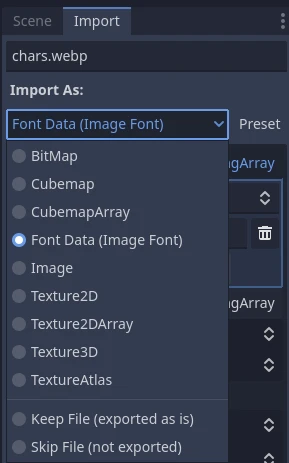
Đổi kiểu import thành Font Data (Image Font)
Bố cục bộ ký tự của font có thể theo bất kỳ thứ tự nào, nhưng nên dùng thứ tự khớp với Unicode chuẩn vì sẽ cần ít cấu hình hơn nhiều khi import. Ví dụ, font bitmap dưới đây chứa các ký tự ASCII và tuân theo thứ tự ASCII chuẩn:
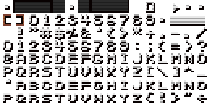
Nguồn: LibreQuake (đã thu nhỏ và cắt bớt để loại bỏ dải mở rộng)

Có thể dùng các tùy chọn import sau để import thành công ảnh font ở trên:
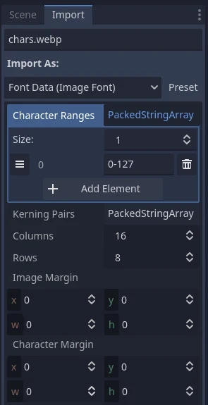
Các tùy chọn import dùng cho font ví dụ ở trên
Tùy chọn Character Ranges là một mảng ánh xạ từng vị trí trên ảnh (theo tọa độ tile, không phải pixel). Atlas font được duyệt từ trái sang phải và từ trên xuống dưới. Ký tự có thể được chỉ định bằng số thập phân (127), số thập lục phân (0x007f) hoặc nằm giữa dấu nháy đơn ('~'). Dải ký tự có thể được chỉ định bằng dấu gạch nối giữa các ký tự.
Chẳng hạn, 0-127 (hoặc 0x0000-0x007f) biểu thị toàn bộ dải ASCII. Một ví dụ khác, ' '-'~' tương đương với 32-127 và biểu thị dải các ký tự ASCII in được (nhìn thấy được).
Hãy đảm bảo tùy chọn Character Ranges không vượt quá số Columns × Rows đã định nghĩa. Nếu không, font sẽ import thất bại.
Nếu ảnh font của bạn chứa phần lề không dùng cho glyph (chẳng hạn thông tin ghi công), hãy thử điều chỉnh Image Margin. Đây là lề chỉ được áp dụng một lần quanh toàn bộ ảnh.
Nếu ảnh font của bạn chứa đường gióng (dưới dạng các đường kẻ giữa các glyph) hoặc nếu khoảng cách giữa các ký tự có vẻ không đúng, hãy thử điều chỉnh Character Margin. Lề này được áp dụng cho mọi glyph được import.
Nếu bạn cần kiểm soát khoảng cách ký tự tinh hơn những gì tùy chọn Character Margin cung cấp, bạn có thêm các lựa chọn khác.
Thứ nhất, Character Ranges hỗ trợ 3 đối số bổ sung sau dải ký tự được chỉ định. Các đối số bổ sung này điều khiển vị trí và khoảng cách của chúng. Chúng lần lượt biểu thị space advance, độ lệch trục X và độ lệch trục Y. Chúng sẽ thay đổi space advance và độ lệch của từng ký tự theo số pixel được ghi. Space advance hữu ích nhất khi, ví dụ, chữ thường của bạn mảnh hơn chữ hoa.
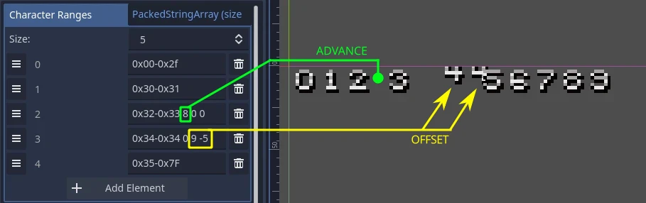
Lưu ý rằng các độ lệch có thể khiến văn bản bị cắt ở mép ranh giới của label.
Thứ hai, bạn cũng có thể thiết lập Kerning Pairs cho từng ký tự. Chỉ định cặp kerning bằng cách gõ hai bộ ký tự cách nhau bởi một dấu cách, tiếp theo là một dấu cách nữa, rồi một con số chỉ định cần thêm/bớt bao nhiêu pixel khoảng cách cho hai bộ ký tự đó khi chúng đứng cạnh nhau.
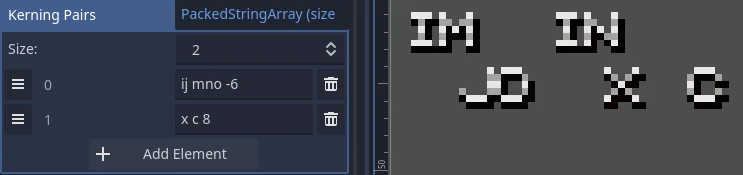
Nếu cần, các ký tự trong cặp kerning có thể được chỉ định bằng mã ký tự Unicode bằng cách nhập \uXXXX trong đó XXXX là giá trị thập lục phân của ký tự Unicode.
Tải một file font
Để nạp một file font (dynamic hoặc bitmap), hãy dùng tùy chọn Quick Load hoặc Load trong dropdown resource cạnh một thuộc tính font, rồi điều hướng đến file font cần dùng:
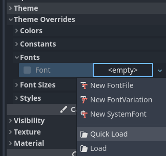
Tải một file font
Bạn cũng có thể kéo thả một file font từ FileSystem dock vào thuộc tính inspector chấp nhận resource Font.
Cảnh báo
Trong Godot 4.0 trở lên, các thuộc tính filter và repeat của texture được định nghĩa tại nơi texture được sử dụng, thay vì trên chính texture. Điều này cũng áp dụng cho font (cả font dynamic lẫn font bitmap).
Font có phong cách pixel art nên tắt bilinear filtering bằng cách đổi cài đặt dự án Rendering > Textures > Canvas Textures > Default Texture Filter thành Nearest.
Kích thước font cũng phải là bội số nguyên của kích thước thiết kế (khác nhau tùy từng font), và Control node dùng font cũng phải được scale theo bội số nguyên. Nếu không, font có thể trông bị mờ. Kích thước font trong Godot được chỉ định bằng pixel (px), không phải point (pt). Hãy ghi nhớ điều này khi so sánh kích thước font giữa các phần mềm khác nhau.
Chế độ texture filter cũng có thể được đặt trên từng node kế thừa từ CanvasItem bằng cách đặt CanvasItem.texture_filter.
Viền và bóng đổ của font
Viền và bóng font có thể được dùng để cải thiện khả năng đọc khi không biết trước màu nền. Chẳng hạn, đây là trường hợp của các phần tử HUD được vẽ đè lên scene 2D/3D.
Viền font có sẵn ở hầu hết các node dẫn xuất từ Control, ngoài ra còn có class_Label3D.
Để bật viền cho font trên một node, hãy cấu hình các theme override Font Outline Color và Outline Size trong inspector. Kết quả sẽ trông như sau:
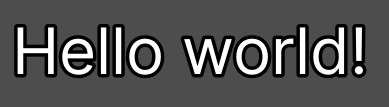
Ví dụ về viền font
Ghi chú
Nếu dùng font với kết xuất MSDF, tùy chọn import MSDF Pixel Range của nó phải được đặt ít nhất gấp đôi giá trị outline size để viền được kết xuất đúng. Nếu không, viền có thể bị cắt sớm hơn dự kiến.
Hỗ trợ đổ bóng phông chữ hạn chế hơn: tính năng này chỉ có trong class_Label và class_RichTextLabel. Ngoài ra, bóng phông chữ luôn có viền cứng (nhưng bạn có thể giảm độ mờ đục để chúng trông nhẹ nhàng hơn). Để bật bóng phông chữ trên một node, hãy cấu hình các theme override Font Shadow Color, Shadow Offset X và Shadow Offset Y trong node Label hoặc RichTextLabel cho phù hợp:
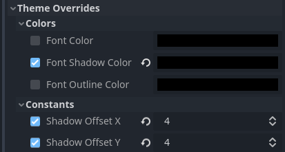
Cấu hình bóng đổ font trong một node Label
Kết quả sẽ trông như thế này:
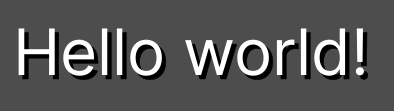
Ví dụ về bóng đổ font
Mẹo
Bạn có thể tạo override cục bộ cho cách hiển thị phông chữ trong các node Label bằng cách tạo một resource class_LabelSettings để dùng lại cho nhiều node Label. Resource này được ưu tiên hơn thuộc tính theme.
Tính năng font nâng cao
Khử răng cưa (Antialiasing)
Bạn có thể điều chỉnh cách phông chữ được làm mịn khi kết xuất bằng cách điều chỉnh antialiasing và hinting. Đây là hai thuộc tính khác nhau, với các trường hợp sử dụng khác nhau.
Antialiasing kiểm soát cách làm mịn các cạnh glyph khi raster hóa phông chữ. Phương pháp antialiasing mặc định (Grayscale) hoạt động tốt trên mọi công nghệ màn hình. Tuy nhiên, ở kích thước nhỏ, antialiasing grayscale có thể khiến phông chữ trông bị mờ.
Độ sắc nét của antialiasing có thể được cải thiện bằng tối ưu hóa subpixel LCD, vốn khai thác mẫu subpixel của hầu hết màn hình LCD bằng cách dịch antialiasing của phông chữ theo từng kênh (đỏ/lục/lam). Nhược điểm là cách này có thể gây hiện tượng "viền màu" (fringing) ở các cạnh, đặc biệt trên các công nghệ màn hình không dùng subpixel RGB tiêu chuẩn (chẳng hạn màn hình OLED).
Với hầu hết game, bạn nên giữ antialiasing Grayscale mặc định. Với các ứng dụng không phải game, tối ưu hóa subpixel LCD là lựa chọn đáng thử.
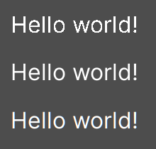
Từ trên xuống dưới: Disabled, Grayscale, LCD Subpixel (RGB)
Ghi chú
Không thể thay đổi antialiasing trên phông chữ kết xuất bằng MSDF – các phông chữ này luôn được kết xuất với antialiasing grayscale.
Hinting
Hinting kiểm soát mức độ bám các cạnh glyph vào pixel khi raster hóa phông chữ. None cho kết quả mịn nhất, nhưng có thể khiến phông chữ trông mờ ở kích thước nhỏ. Light (mặc định) sắc nét hơn nhờ bám cạnh glyph vào pixel chỉ trên trục Y, còn Full còn sắc nét hơn nữa nhờ bám cạnh glyph vào pixel trên cả hai trục X và Y. Tùy sở thích cá nhân, bạn có thể chọn chế độ hinting này hay chế độ khác.
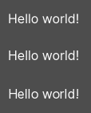
Từ trên xuống dưới: hinting None, Light, Full
Ghi chú
Nếu việc thay đổi chế độ hinting không có tác dụng nhìn thấy được sau khi nhấn Reimport, thường là do phông chữ không chứa chỉ dẫn hinting. Bạn có thể khắc phục bằng cách tìm phiên bản tệp phông chữ có chứa chỉ dẫn hinting, hoặc bật Force Autohinter trong Import dock. Tùy chọn này sẽ dùng autohinter của FreeType để tự động thêm chỉ dẫn hinting vào phông chữ được import.
Định vị subpixel
Định vị subpixel có thể được điều chỉnh. Đây là một tính năng của FreeType cho phép glyph được kết xuất gần hơn với hình dạng thiết kế ban đầu. Cài đặt mặc định Auto tự động bật định vị subpixel ở kích thước nhỏ, nhưng tắt nó ở kích thước phông chữ lớn để cải thiện hiệu năng raster hóa.
Bạn có thể buộc chế độ định vị subpixel thành Disabled, One half of a pixel hoặc One quarter of a pixel. One quarter of a pixel cho chất lượng tốt nhất, đổi lại thời gian raster hóa lâu hơn.
Việc thay đổi antialiasing, hinting và định vị subpixel có tác dụng rõ rệt nhất ở kích thước phông chữ nhỏ.
Cảnh báo
Phông chữ có phong cách pixel art nên đặt chế độ định vị subpixel thành Disabled. Nếu không, phông chữ có thể trông như có kích thước pixel không đều.
Bước này không cần thiết với phông chữ bitmap, vì định vị subpixel chỉ liên quan đến phông chữ động (thường được tạo từ các thành phần vector).
Mipmap
Theo mặc định, phông chữ không được tạo mipmap để giảm mức dùng bộ nhớ và tăng tốc raster hóa. Tuy nhiên, điều này có thể khiến phông chữ bị thu nhỏ trông lấm tấm hạt. Hiện tượng này đặc biệt dễ thấy với Văn bản 3D không bật Fixed Size. Nó cũng có thể xảy ra khi hiển thị văn bản bằng phông chữ raster hóa truyền thống (không phải MSDF) trong một node Control có tỉ lệ nhỏ hơn (1, 1).
Sau khi chọn một phông chữ trong FileSystem dock, bạn có thể bật Mipmaps trong Import dock để cải thiện hình thức kết xuất của phông chữ khi bị thu nhỏ.
Mipmap cũng có thể được bật trên phông chữ MSDF. Điều này có thể cải thiện chút ít chất lượng kết xuất phông chữ ở kích thước nhỏ hơn mặc định, nhưng bản thân phông chữ MSDF vốn đã ít bị lấm tấm hạt.
Kết xuất phông chữ MSDF
Kết xuất phông chữ multi-channel signed distance field (MSDF) cho phép kết xuất phông chữ ở mọi kích thước mà không phải raster hóa lại khi kích thước thay đổi.
Kết xuất phông chữ MSDF có 2 ưu điểm so với raster hóa phông chữ truyền thống mà Godot dùng theo mặc định:
Phông chữ luôn trông sắc nét, kể cả ở kích thước rất lớn.
Ít bị giật hơn khi kết xuất ký tự ở kích thước phông chữ lớn lần đầu tiên, vì không cần thực hiện raster hóa.
Nhược điểm của kết xuất font MSDF là:
Chi phí nền cho việc kết xuất phông chữ cao hơn. Điều này thường không đáng kể trên nền tảng desktop, nhưng có thể ảnh hưởng đến thiết bị di động cấu hình thấp.
Phông chữ ở kích thước nhỏ sẽ không rõ nét bằng phông chữ raster hóa, do thiếu hinting.
Việc kết xuất glyph mới lần đầu tiên ở kích thước phông chữ nhỏ có thể tốn kém hơn so với phông chữ raster hóa truyền thống. Bạn có thể dùng Kết xuất trước font để giảm bớt vấn đề này.
Không thể bật tối ưu hóa subpixel LCD cho phông chữ MSDF.
Phông chữ có đường viền tự giao nhau sẽ không kết xuất đúng ở chế độ MSDF. Nếu bạn gặp vấn đề kết xuất với phông chữ tải từ các trang web như Google Fonts, hãy thử tải phông chữ từ trang web chính thức của tác giả.
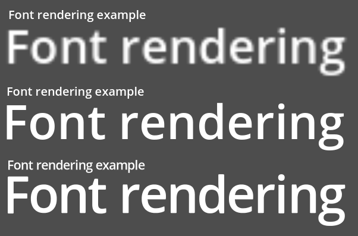
So sánh các phương pháp raster hóa phông chữ. Từ trên xuống dưới: raster hóa không oversampling, raster hóa có oversampling, MSDF
Để bật kết xuất MSDF cho một phông chữ, hãy chọn nó trong FileSystem dock, chuyển sang Import dock, bật Multichannel Signed Distance Field, rồi nhấn Reimport:
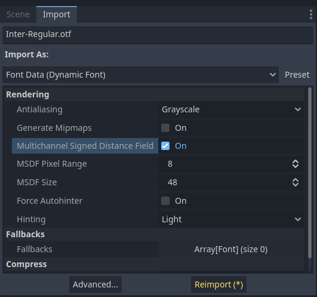
Bật MSDF trong tùy chọn import của phông chữ
Sử dụng emoji
Godot hỗ trợ hạn chế cho phông chữ emoji:
Phông chữ emoji CBDT/CBLC (PNG nhúng) và SVG được hỗ trợ.
Phông chữ emoji COLR/CPAL (định dạng vector tùy biến) không được hỗ trợ.
Nén ảnh bitmap EMJC (được dùng trong phông chữ emoji hệ thống của iOS) không được hỗ trợ. Điều này có nghĩa là để hỗ trợ emoji trên iOS, bạn phải dùng một phông chữ tùy chỉnh sử dụng SVG hoặc nén bitmap PNG.
Để Godot có thể hiển thị emoji, phông chữ được dùng (hoặc một trong các phông chữ dự phòng của nó) cần chứa các emoji đó. Nếu không, emoji sẽ không được hiển thị và các ký tự giữ chỗ "tofu" sẽ xuất hiện thay thế:
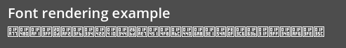
Hình thức mặc định khi thử dùng emoji trong một label
Sau khi thêm một phông chữ hiển thị emoji như Noto Color Emoji, bạn sẽ nhận được kết quả như mong đợi:
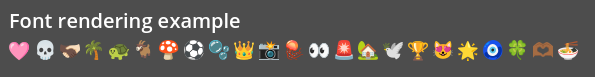
Hình thức đúng sau khi thêm phông chữ emoji vào label
Để dùng một phông chữ thông thường cùng với emoji, bạn nên chỉ định một phông chữ dự phòng trỏ đến phông chữ emoji trong tùy chọn import nâng cao của phông chữ thông thường. Nếu muốn dùng phông chữ mặc định của dự án trong khi hiển thị emoji, hãy để trống thuộc tính Base Font trong FontVariation và thêm một phông chữ dự phòng trỏ đến phông chữ emoji:
Mẹo
Phông chữ emoji có kích thước khá lớn, nên bạn có thể muốn tải phông chữ hệ thống để cung cấp glyph emoji thay vì đóng gói nó cùng dự án. Cách này cho phép hỗ trợ emoji đầy đủ trong dự án mà không làm tăng kích thước tệp PCK khi xuất. Nhược điểm là emoji sẽ trông khác nhau tùy nền tảng, và việc tải phông chữ hệ thống không được hỗ trợ trên mọi nền tảng.
Bạn cũng có thể dùng font hệ thống làm font dự phòng.
Sử dụng font biểu tượng
Các công cụ như Fontello có thể được dùng để tạo tệp phông chữ chứa các vector được import từ tệp SVG. Bạn có thể dùng cách này để kết xuất các thành phần vector tùy chỉnh như một phần của văn bản, hoặc tạo biểu tượng 3D đùn khối bằng Văn bản 3D và TextMesh.
Ghi chú
Fontello hiện không hỗ trợ tạo phông chữ nhiều màu (vốn Godot có thể kết xuất). Tính đến tháng 11 năm 2022, hỗ trợ phông chữ nhiều màu trong các công cụ tạo phông chữ biểu tượng vẫn còn hiếm.
Tùy trường hợp sử dụng, cách này có thể cho kết quả tốt hơn so với dùng thẻ img trong RichTextLabel. Khác với ảnh bitmap (bao gồm cả SVG, vốn được Godot raster hóa khi import), dữ liệu vector thực sự có thể thay đổi kích thước tùy ý mà không giảm chất lượng.
Sau khi tải xuống tệp phông chữ đã tạo, hãy nạp nó vào dự án Godot rồi chỉ định nó làm phông chữ tùy chỉnh cho node Label, RichTextLabel hoặc Label3D. Chuyển sang giao diện web của Fontello, rồi sao chép ký tự bằng cách chọn nó và nhấn Ctrl + C (Cmd + C trên macOS). Dán ký tự vào thuộc tính Text của node Label. Ký tự sẽ hiện dưới dạng glyph giữ chỗ trong Inspector, nhưng sẽ hiển thị đúng trong viewport 2D/3D.
Để dùng phông chữ biểu tượng cùng với phông chữ truyền thống trong cùng một Control, bạn có thể chỉ định phông chữ biểu tượng làm phông chữ dự phòng. Cách này hoạt động vì phông chữ biểu tượng dùng vùng sử dụng riêng (private use area) của Unicode, vốn được dành cho phông chữ tùy chỉnh và theo thiết kế không chứa glyph tiêu chuẩn.
Ghi chú
Một số phông chữ biểu tượng hiện đại như Font Awesome 6 có biến thể desktop dùng ligature để chỉ định biểu tượng. Điều này cho phép bạn chỉ định biểu tượng bằng cách nhập trực tiếp tên của nó vào thuộc tính Text của bất kỳ node nào có thể hiển thị phông chữ. Khi tên biểu tượng được nhập đầy đủ dưới dạng văn bản (chẳng hạn house), nó sẽ được thay bằng biểu tượng.
Dù dễ dùng hơn, cách này không thể kết hợp với phông chữ dự phòng vì các ký tự của phông chữ chính sẽ được ưu tiên hơn ligature của phông chữ dự phòng.
Phông chữ dự phòng
Godot hỗ trợ định nghĩa một hoặc nhiều phông chữ dự phòng khi phông chữ chính thiếu glyph cần hiển thị. Có 2 trường hợp sử dụng chính cho việc định nghĩa phông chữ dự phòng:
Dùng một phông chữ chỉ hỗ trợ bộ ký tự Latin, nhưng dùng phông chữ khác để có thể hiển thị văn bản thuộc bộ ký tự khác như Cyrillic.
Dùng một phông chữ để kết xuất văn bản, và một phông chữ khác để kết xuất emoji hoặc biểu tượng.
Mở hộp thoại Advanced Import Settings bằng cách nhấp đúp vào tệp phông chữ trong FileSystem dock. Bạn cũng có thể chọn phông chữ trong FileSystem dock, chuyển sang Import dock rồi chọn Advanced… ở phía dưới:
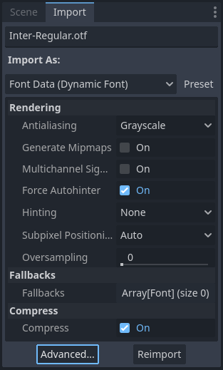
Import dock
Trong hộp thoại hiện ra, tìm mục Fallbacks ở thanh bên phải, nhấn vào dòng chữ Array[Font] (size 0) để mở rộng thuộc tính, rồi nhấn Add Element:
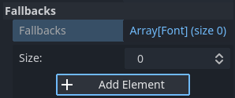
Thêm phông chữ dự phòng
Nhấn vào mũi tên thả xuống trên phần tử mới, rồi chọn một tệp phông chữ bằng tùy chọn Quick Load hoặc Load:
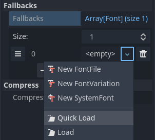
Nạp phông chữ dự phòng
Bạn có thể thêm phông chữ dự phòng trong khi vẫn dùng phông chữ mặc định của dự án. Để làm vậy, hãy để trống thuộc tính Base Font trong khi thêm một hoặc nhiều phông chữ dự phòng.
Ghi chú
Phông chữ dự phòng cũng có thể được định nghĩa cục bộ tương tự như Tính năng font OpenType, nhưng để ngắn gọn, phần này không đề cập ở đây.
Font biến thiên (variable font)
Godot hỗ trợ đầy đủ phông chữ biến thiên (variable font), cho phép bạn dùng một tệp phông chữ duy nhất để thể hiện nhiều độ đậm và kiểu chữ khác nhau (thường, đậm, nghiêng, …). Tệp phông chữ bạn dùng phải hỗ trợ tính năng này.
Để dùng phông chữ biến thiên, hãy tạo một resource class_FontVariation tại vị trí bạn định dùng phông chữ, rồi nạp một tệp phông chữ vào resource FontVariation đó:
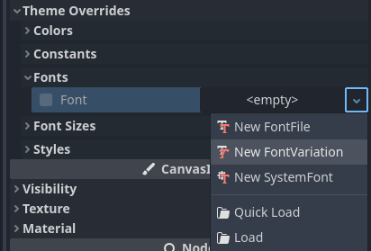
Tạo một resource FontVariation
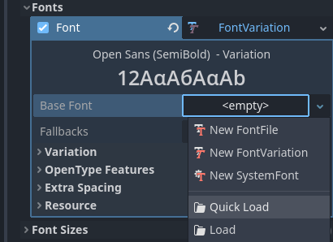
Nạp tệp phông chữ vào resource FontVariation
Cuộn xuống mục Variation của FontVariation, rồi nhấn vào dòng chữ Variation Coordinates để mở rộng danh sách các trục có thể điều chỉnh:
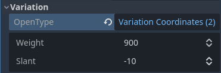
Danh sách các trục biến thiên
Tập hợp các trục bạn có thể điều chỉnh phụ thuộc vào phông chữ được nạp. Một số phông chữ biến thiên chỉ hỗ trợ một trục điều chỉnh (thường là weight hoặc slant), trong khi số khác có thể hỗ trợ nhiều trục điều chỉnh.
Ví dụ, đây là phông chữ Inter V với weight bằng 900 và slant bằng -10:
Ví dụ phông chữ biến thiên (Inter V)
Mẹo
Dù tên và thang đo các trục của phông chữ biến thiên không được chuẩn hóa, các nhà thiết kế phông chữ thường tuân theo một số quy ước chung. Trục weight được chuẩn hóa trong OpenType để hoạt động như sau:
Giá trị trục |
Độ đậm phông chữ thực tế |
|---|---|
|
Thin (Hairline) |
|
Extra Light (Ultra Light) |
|
Light |
|
Regular (Normal) |
|
Medium |
|
Semi-Bold (Demi-Bold) |
|
Bold |
|
Extra Bold (Ultra Bold) |
|
Black (Heavy) |
|
Extra Black (Ultra Black) |
Bạn có thể lưu FontVariation thành tệp resource .tres để dùng lại ở nơi khác:
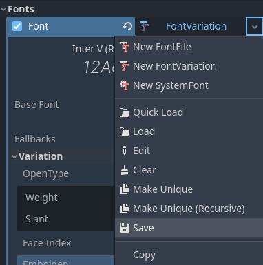
Lưu FontVariation thành tệp resource bên ngoài
Đậm và nghiêng giả lập
Khi viết chữ đậm hoặc nghiêng, dùng các biến thể phông chữ được thiết kế riêng cho mục đích này sẽ cho kết quả đẹp hơn. Khoảng cách giữa các glyph sẽ đồng đều hơn khi dùng phông chữ đậm, và hình dạng một số glyph có thể thay đổi hoàn toàn trong biến thể nghiêng (so sánh "a" và "a").
Tuy nhiên, phông chữ đậm và nghiêng thực sự đòi hỏi phải đi kèm nhiều tệp phông chữ hơn, làm tăng kích thước bản phân phối. Bạn cũng có thể dùng một tệp phông chữ biến thiên duy nhất, nhưng tệp này sẽ lớn hơn một phông chữ không biến thiên đơn lẻ. Dù kích thước tệp thường không phải vấn đề với dự án desktop, nó có thể là mối lo với dự án di động/web vốn cần giữ kích thước bản phân phối càng nhỏ càng tốt.
Để có thể hiển thị chữ đậm và nghiêng mà không cần đi kèm thêm phông chữ (hoặc dùng phông chữ biến thiên có kích thước lớn hơn), Godot hỗ trợ đậm và nghiêng giả lập (faux).
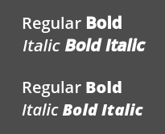
Đậm/nghiêng giả lập (trên), đậm/nghiêng thực (dưới). Phông chữ thường được dùng: Open Sans SemiBold
Đậm và nghiêng giả lập được tự động dùng trong các thẻ bold và italic của class_RichTextLabel nếu không có phông chữ tùy chỉnh nào được cung cấp cho chữ đậm và/hoặc nghiêng.
Để dùng đậm giả lập, hãy tạo một resource FontVariation trong thuộc tính yêu cầu resource Font. Đặt Variation > Embolden thành giá trị dương để làm phông chữ đậm hơn, hoặc giá trị âm để làm nó bớt đậm. Giá trị khuyến nghị nằm trong khoảng 0.5 đến 1.2 tùy phông chữ.
Nghiêng giả lập được tạo bằng cách làm xiên văn bản, thực hiện bằng cách sửa đổi transform của từng ký tự. Tính năng này cũng có trong FontVariation qua thuộc tính Variation > Transform. Đặt thành phần yx của transform ký tự thành giá trị dương sẽ làm nghiêng văn bản. Giá trị khuyến nghị nằm trong khoảng 0.2 đến 0.4 tùy phông chữ.
Điều chỉnh khoảng cách phông chữ
Vì mục đích phong cách hoặc để dễ đọc hơn, bạn có thể muốn điều chỉnh cách một phông chữ được trình bày trong Godot.
Tạo một resource FontVariation trong thuộc tính yêu cầu resource Font. Có 4 thuộc tính trong mục Variation > Extra Spacing, chấp nhận cả giá trị dương và âm:
Glyph: Khoảng cách bổ sung giữa mỗi glyph.
Space: Khoảng cách bổ sung giữa các từ.
Top: Khoảng cách bổ sung phía trên glyph. Thuộc tính này được dùng cho văn bản nhiều dòng, và cũng để tính kích thước tối thiểu của các control như class_Label và class_Button.
Bottom: Khoảng cách bổ sung phía dưới glyph. Thuộc tính này được dùng cho văn bản nhiều dòng, và cũng để tính kích thước tối thiểu của các control như class_Label và class_Button.
Thuộc tính Variation > Transform cũng có thể được điều chỉnh để kéo giãn ký tự theo chiều ngang hoặc dọc. Cụ thể, việc này được thực hiện bằng cách điều chỉnh các thành phần xx (tỉ lệ ngang) và yy (tỉ lệ dọc). Hãy nhớ điều chỉnh khoảng cách glyph để bù cho các thay đổi, vì transform glyph không ảnh hưởng đến khoảng không gian mỗi glyph chiếm trong văn bản. Nên hạn chế dùng kiểu co giãn không đồng đều này, vì phông chữ thường không được thiết kế để hiển thị khi bị kéo giãn.
Tính năng font OpenType
Godot hỗ trợ bật các tính năng phông chữ OpenType, một cách chuẩn hóa để định nghĩa các ký tự thay thế có thể bật/tắt mà không cần đổi hẳn tệp phông chữ. Dù được gọi là tính năng phông chữ OpenType, chúng cũng được hỗ trợ trong tệp phông chữ TrueType (.ttf) và WOFF/WOFF2.
Mức hỗ trợ tính năng OpenType phụ thuộc nhiều vào phông chữ được dùng. Một số phông chữ không hỗ trợ tính năng OpenType nào, trong khi số khác có thể hỗ trợ hàng chục tính năng có thể bật/tắt.
Có 2 cách để sử dụng các tính năng font OpenType:
Toàn cục trên một tệp phông chữ
Mở hộp thoại Advanced Import Settings bằng cách nhấp đúp vào tệp phông chữ trong FileSystem dock. Bạn cũng có thể chọn phông chữ trong FileSystem dock, chuyển sang Import dock rồi chọn Advanced… ở phía dưới:
Import dock
Trong hộp thoại hiện ra, tìm mục Metadata Overrides > OpenType Features ở thanh bên phải, nhấn vào dòng chữ Features (0 of N set) để mở rộng thuộc tính, rồi nhấn Add Feature:
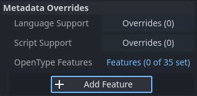
Override tính năng OpenType trong Advanced Import Settings
Trong một trường hợp dùng phông chữ cụ thể (FontVariation)
Để dùng một tính năng phông chữ, hãy tạo resource FontVariation giống như với phông chữ biến thiên, rồi nạp một tệp phông chữ vào resource FontVariation đó:
Tạo một resource FontVariation
Nạp tệp phông chữ vào một resource FontVariation
Cuộn xuống mục OpenType Features của FontVariation, nhấn vào dòng chữ Features (0 of N set) để mở rộng thuộc tính, rồi nhấn Add Feature và chọn tính năng mong muốn trong danh sách thả xuống:
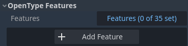
Chỉ định tính năng OpenType trong resource FontVariation
Ví dụ, đây là phông chữ Inter khi không có tính năng Slashed Zero (trên), và khi bật tính năng OpenType Slashed Zero (dưới):
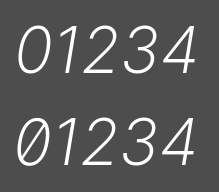
So sánh tính năng OpenType (Inter)
Bạn có thể tắt ligature và/hoặc kerning cho một phông chữ cụ thể bằng cách thêm các tính năng OpenType, rồi bỏ chọn chúng trong Inspector:
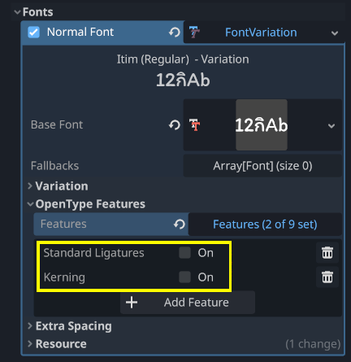
Tắt ligature và kerning cho một phông chữ
Phông chữ hệ thống
Cảnh báo
Việc tải phông chữ hệ thống chỉ được hỗ trợ trên Windows, macOS, Linux, Android và iOS.
Tuy nhiên, việc tải phông chữ hệ thống trên Android không đáng tin cậy vì không có API chính thức nào cho việc này. Godot phải dựa vào việc phân tích các tệp cấu hình hệ thống, vốn có thể bị các nhà sản xuất Android bên thứ ba sửa đổi. Điều này có thể khiến việc tải phông chữ hệ thống không hoạt động.
Phông chữ hệ thống là một loại resource khác so với phông chữ được import. Chúng không bao giờ thực sự được import vào dự án, mà được tải lúc chạy. Điều này có 2 lợi ích:
Phông chữ không nằm trong tệp PCK được xuất, giúp dự án được xuất có kích thước tệp nhỏ hơn.
Vì phông chữ không đi kèm dự án được xuất, cách này tránh được các vấn đề bản quyền có thể phát sinh nếu phân phối phông chữ hệ thống độc quyền cùng dự án.
Engine tự động dùng phông chữ hệ thống làm phông chữ dự phòng, nhờ đó có thể hiển thị ký tự CJK và emoji mà không cần tải phông chữ tùy chỉnh. Tuy vậy vẫn có một số hạn chế, như đã đề cập trong mục Dùng emoji.
Tạo một resource class_SystemFont tại vị trí bạn muốn dùng phông chữ hệ thống:
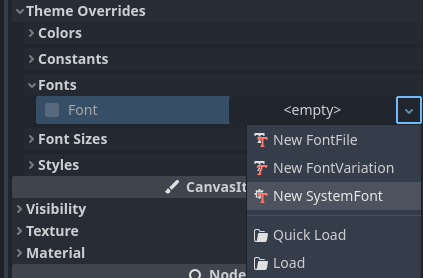
Tạo một resource SystemFont
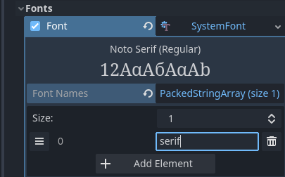
Chỉ định tên phông chữ cần dùng trong resource SystemFont
Bạn có thể chỉ định rõ một hoặc nhiều tên phông chữ (chẳng hạn Arial), hoặc chỉ định tên của một alias phông chữ ánh xạ tới phông chữ mặc định "tiêu chuẩn" của hệ thống:
Bí danh font |
Windows |
macOS/iOS |
Linux |
Android |
|---|---|---|---|---|
|
Arial |
Helvetica |
Do fontconfig xử lý |
Roboto / Noto Sans |
|
Times New Roman |
Times |
Do fontconfig xử lý |
Noto Serif |
|
Courier New |
Courier |
Do fontconfig xử lý |
Droid Sans Mono |
|
Comic Sans MS |
Apple Chancery |
Do fontconfig xử lý |
Dancing Script |
|
Gabriola |
Papyrus |
Do fontconfig xử lý |
Droid Sans Mono |
Trên Android, Roboto được dùng cho văn bản Latin/Cyrillic và Noto Sans được dùng cho glyph của các ngôn ngữ khác như CJK. Trên các bản phân phối Android của bên thứ ba, lựa chọn font cụ thể có thể khác.
Nếu chỉ định nhiều hơn một font, font đầu tiên được tìm thấy trên hệ thống sẽ được dùng (từ trên xuống dưới). Tên font và bí danh không phân biệt chữ hoa chữ thường trên mọi nền tảng.
Tương tự như font variation, bạn có thể lưu cấu hình SystemFont vào một file resource để tái sử dụng ở những nơi khác.
Hãy nhớ rằng các font hệ thống khác nhau có số đo (metrics) khác nhau, nghĩa là văn bản vừa với một hình chữ nhật trên nền tảng này có thể không vừa trên nền tảng khác. Luôn chừa thêm một ít khoảng trống trong quá trình phát triển để các label có thể mở rộng thêm khi cần.
Ghi chú
Khác với Windows và macOS/iOS, bộ font mặc định đi kèm trên Linux phụ thuộc vào bản phân phối. Điều này có nghĩa là trên các bản phân phối Linux khác nhau, font hiển thị cho cùng một tên hoặc bí danh font hệ thống có thể khác nhau.
Bạn cũng có thể tải font lúc runtime ngay cả khi chúng chưa được cài trên hệ thống. Xem Tải và lưu lúc runtime để biết chi tiết.
Kết xuất trước font
Khi dùng font raster truyền thống, Godot lưu cache glyph theo từng font và từng kích thước. Điều này giảm hiện tượng giật hình, nhưng giật vẫn có thể xảy ra lần đầu một glyph được hiển thị khi chạy dự án. Hiện tượng này đặc biệt dễ thấy ở cỡ font lớn hoặc trên thiết bị di động.
Với font MSDF, chúng chỉ cần được raster hóa một lần thành một texture signed distance field đặc biệt. Nhờ vậy cache có thể thực hiện thuần túy theo từng font mà không cần quan tâm đến kích thước font. Tuy nhiên, lần kết xuất đầu tiên của font MSDF chậm hơn so với font raster truyền thống ở kích thước trung bình.
Để tránh giật hình liên quan đến kết xuất font, bạn có thể kết xuất trước (prerender) một số glyph. Việc này có thể làm cho tất cả glyph bạn định dùng (để có kết quả tối ưu), hoặc chỉ cho các glyph phổ biến có khả năng xuất hiện nhiều nhất trong gameplay (để giảm kích thước file). Các glyph không được kết xuất trước sẽ được raster hóa tức thời như bình thường.
Ghi chú
Trong cả hai trường hợp (truyền thống và MSDF), việc raster hóa font được thực hiện trên CPU. Điều này có nghĩa là hiệu năng GPU không ảnh hưởng đến thời gian raster hóa font.
Mở hộp thoại Advanced Import Settings bằng cách nhấp đúp vào tệp phông chữ trong FileSystem dock. Bạn cũng có thể chọn phông chữ trong FileSystem dock, chuyển sang Import dock rồi chọn Advanced… ở phía dưới:
Import dock
Chuyển đến tab Pre-render Configurations của hộp thoại Advanced Import Settings, rồi thêm một cấu hình bằng cách nhấp vào biểu tượng "dấu cộng":
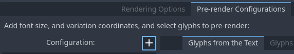
Thêm một cấu hình kết xuất trước mới trong hộp thoại Advanced Import Settings
Sau khi thêm cấu hình, hãy đảm bảo nó được chọn bằng cách nhấp vào tên của nó một lần. Bạn cũng có thể đổi tên cấu hình bằng cách nhấp đúp vào nó.
Có 2 cách để thêm glyph cần kết xuất trước vào một cấu hình. Bạn có thể kết hợp cả hai cách cộng dồn:
Dùng văn bản từ bản dịch
Với hầu hết dự án, đây là cách tiện nhất vì nó tự động lấy văn bản từ các bản dịch ngôn ngữ của bạn. Nhược điểm là chỉ dùng được nếu dự án của bạn hỗ trợ quốc tế hóa. Nếu không, hãy dùng cách "Dùng văn bản tùy chỉnh" được mô tả bên dưới.
Sau khi thêm bản dịch vào Project Settings, dùng tab Glyphs from the Translations để chọn các bản dịch bằng cách nhấp đúp vào chúng, rồi nhấp Shape All Strings in the Translations and Add Glyphs ở phía dưới:
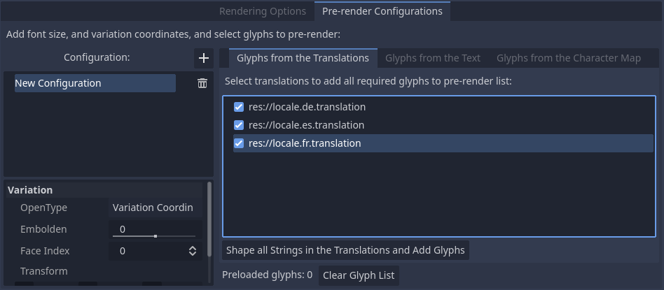
Bật kết xuất trước trong hộp thoại Advanced Import Settings với tab Glyphs from the Translations
Ghi chú
Danh sách glyph kết xuất trước không tự động cập nhật khi bản dịch thay đổi, vì vậy bạn cần lặp lại quy trình này nếu bản dịch của bạn thay đổi đáng kể.
Dùng văn bản tùy chỉnh
Dù yêu cầu chỉ định thủ công văn bản sẽ xuất hiện trong game, đây là cách hiệu quả nhất cho các game không có tính năng nhập văn bản của người dùng. Cách này rất đáng thử với game di động để giảm kích thước file của ứng dụng phát hành.
Để dùng văn bản có sẵn làm cơ sở cho kết xuất trước, hãy vào tab con Glyphs from the Text của hộp thoại Advanced Import Settings, nhập văn bản vào cửa sổ bên phải, rồi nhấp Shape Text and Add Glyphs ở cuối hộp thoại:
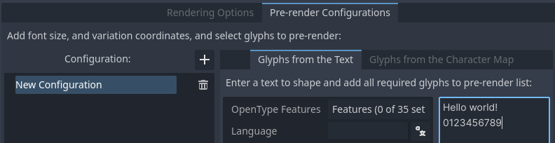
Bật kết xuất trước trong hộp thoại Advanced Import Settings với tab Glyphs from the Text
Mẹo
Nếu dự án của bạn hỗ trợ quốc tế hóa, bạn có thể dán nội dung các file CSV hoặc PO vào ô trên để nhanh chóng kết xuất trước mọi ký tự có thể được kết xuất trong gameplay (trừ các chuỗi do người dùng cung cấp hoặc không thể dịch).
Bằng cách bật các bộ ký tự
Cách thứ hai cần ít cấu hình hơn và ít phải cập nhật hơn khi văn bản trong game thay đổi, đồng thời phù hợp hơn với game nhiều chữ hoặc game nhiều người chơi có chat. Mặt khác, nó có thể khiến những glyph không bao giờ xuất hiện trong game cũng bị kết xuất trước, kém hiệu quả hơn về kích thước file.
Để dùng văn bản có sẵn làm cơ sở cho kết xuất trước, hãy vào tab con Glyphs from the Character Map của hộp thoại Advanced Import Settings, rồi nhấp đúp vào các bộ ký tự cần bật ở bên phải:
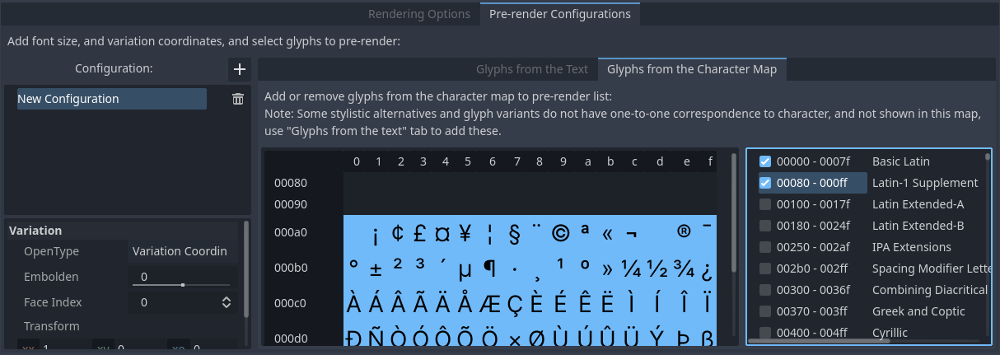
Bật kết xuất trước trong hộp thoại Advanced Import Settings với tab Glyphs from the Character Map
Để kết xuất trước đầy đủ, các bộ ký tự bạn cần bật phụ thuộc vào ngôn ngữ mà game hỗ trợ. Với tiếng Anh, chỉ cần bật Basic Latin. Bật thêm Latin-1 Supplement cho phép bao phủ đầy đủ nhiều ngôn ngữ hơn, như tiếng Pháp, tiếng Đức và tiếng Tây Ban Nha. Với tiếng Nga, cần bật Cyrillic, và cứ thế.
Thuộc tính font mặc định của dự án
Trong mục GUI > Theme của Project Settings nâng cao, bạn có thể chọn cách kết xuất font mặc định:
Default Font Antialiasing: Điều khiển phương pháp khử răng cưa dùng cho font mặc định của dự án.
Default Font Hinting: Điều khiển phương pháp hinting dùng cho font mặc định của dự án.
Default Font Subpixel Positioning: Điều khiển phương pháp định vị subpixel cho font mặc định của dự án.
Default Font Multichannel Signed Distance Field: Nếu
true, font mặc định của dự án sẽ dùng kết xuất font MSDF thay vì raster hóa truyền thống.Default Font Generate Mipmaps: Nếu
true, bật việc tạo và sử dụng mipmap cho font mặc định của dự án.
Ghi chú
Các cài đặt dự án này chỉ ảnh hưởng đến font mặc định của dự án (font được nhúng cứng trong file thực thi của engine).
Thuộc tính của các font tùy chỉnh được điều khiển bởi tùy chọn import tương ứng của chúng. Bạn có thể dùng mục Import Defaults của hộp thoại Project Settings để ghi đè tùy chọn import mặc định cho font tùy chỉnh.